Learned from feedback
Editing policies learn by building levels and receiving task rewards, without a corpus of authored examples. Their observations shape which strategies transfer to new targets, map sizes, and shapes.
I study how agents build playable game levels from design goals. My work asks how they learn from interaction with a game, reuse knowledge from pretraining, and choose tools that help turn a request into a working level.
Thesis Learning and Adapting Agents for Procedural Content Generation · advised by Julian Togelius
About
I am a PhD candidate in Computer Science and Engineering at New York University, advised by Prof. Julian Togelius at the NYU Game Innovation Lab. Before that I earned an M.S. in Electrical Engineering at New York University and a B.S. in Optoelectronic Information Science and Engineering at Sun Yat-sen University, including an exchange semester at UC Berkeley.
My research focuses on procedural content generation: how agents learn or reuse strategies for building playable levels from design goals. I study reinforcement learning, language-model tool use, and reusable constructions, with an emphasis on control, generalization, reliable execution, and computational cost. The aim is to support game creation and provide varied environments for training and evaluating agents. Earlier I worked on synthetic fingerprints and irises.
Outside research I am a traveler, photographer and video editor.
Pronunciation “Ze-hua Jiang” — zuh-hwa jahng
我是纽约大学计算机科学与工程专业的博士候选人，在纽约大学游戏创新实验室跟随 Julian Togelius 教授做研究。此前我在纽约大学获得电子工程硕士学位，并在中山大学获得光电信息科学与工程学士学位，其间曾在加州大学伯克利分校交换。
我的研究方向是程序化内容生成（PCG）：智能体如何学习或复用构建策略，将设计目标转化为可玩的关卡。我研究强化学习、大语言模型的框架和可复用的关卡构造，关注可控性、泛化、执行可靠性与计算成本，希望为游戏创作以及智能体的训练和评估提供更多样的环境。此前我也研究过合成指纹和虹膜。
我平时喜欢旅游，拍照，拍视频。欢迎随时与我联系，交个朋友！
Research question
A generator needs to know which edits produce a traversable path, a solvable puzzle, or a requested gameplay experience. My dissertation studies this construction knowledge when game rules and an executable environment are available but authored examples are limited. I examine where the knowledge comes from and how observations, tools, and feedback let an agent use it.
Editing policies learn by building levels and receiving task rewards, without a corpus of authored examples. Their observations shape which strategies transfer to new targets, map sizes, and shapes.
Pretrained language models select editing tools and generation algorithms, observe the results, and revise the level. This supports numeric targets and broader language requests without task-specific fine-tuning.
Generation algorithms and tested level pieces supply useful constructions directly. My ongoing work asks whether search can discover reusable pieces and reduce the manual work needed to support a model.
What an agent can build depends on both its construction knowledge and the process that lets it use that knowledge. Across my studies, observations, available tools, and environmental feedback shape control, generalization, and generation cost.
Research arc
Five collaborative projects connect learned editing policies, tool-using language models, and reliable local execution. The ongoing work asks whether smaller adapted models and automatically discovered level pieces can make generation more practical while preserving control.
Extends PCGRL to Minecraft tasks with jumping and gravity. Editing policies learn structures such as staircases from task feedback and adapt them to different fixed-door configurations, without authored level examples. Control is stronger for shorter path targets and remains limited for jump counts and large vertical separations.
@inproceedings{jiang20223DPCG,
author = {Jiang, Zehua and Earle, Sam and Green, Michael and Togelius, Julian},
title = {Learning Controllable 3D Level Generators},
year = {2022},
isbn = {9781450397957},
publisher = {Association for Computing Machinery},
address = {New York, NY, USA},
url = {https://doi.org/10.1145/3555858.3563273},
doi = {10.1145/3555858.3563273},
abstract = {Procedural Content Generation via Reinforcement Learning (PCGRL) foregoes the need for large human-authored data-sets and allows agents to train explicitly on functional constraints, using computable, user-defined measures of quality instead of target output. We explore the application of PCGRL to 3D domains, in which content-generation tasks naturally have greater complexity and potential pertinence to real-world applications. Here, we introduce several PCGRL tasks for the 3D domain, Minecraft. These tasks will challenge RL-based generators using affordances often found in 3D environments, such as jumping, multiple dimensional movement, and gravity. We train agents to optimize each of these tasks to explore the capabilities of existing in PCGRL. The agents are able to generate relatively complex and diverse levels, and generalize to random initial states and control targets. Controllability tests in the presented tasks demonstrate their utility to analyze success and failure for 3D generators. We argue that these generators could serve both as co-creative tools for game designers, and as pre-trained environment generators in curriculum learning for player agents.},
booktitle = {Proceedings of the 17th International Conference on the Foundations of Digital Games},
articleno = {71},
numpages = {9},
location = {Athens, Greece},
series = {FDG '22}
}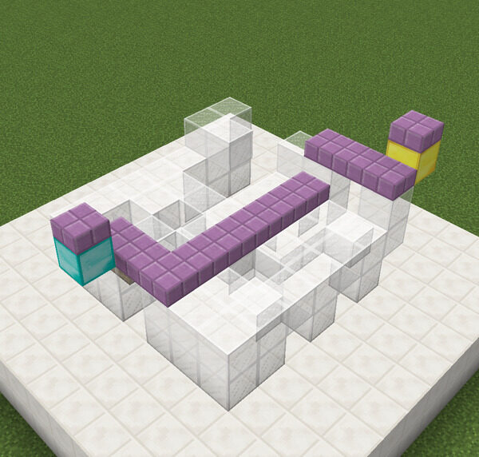
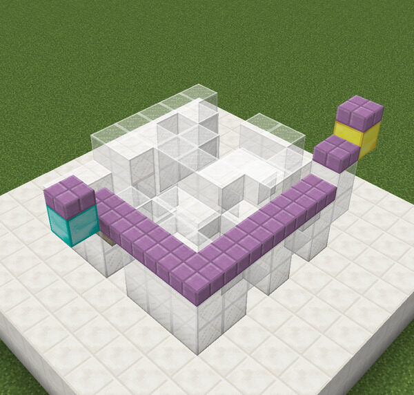
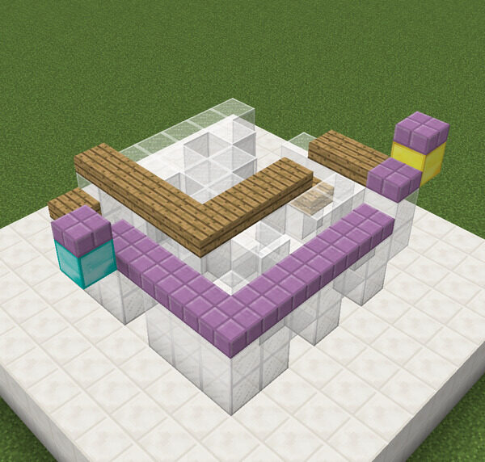
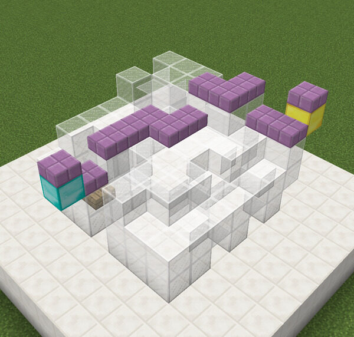
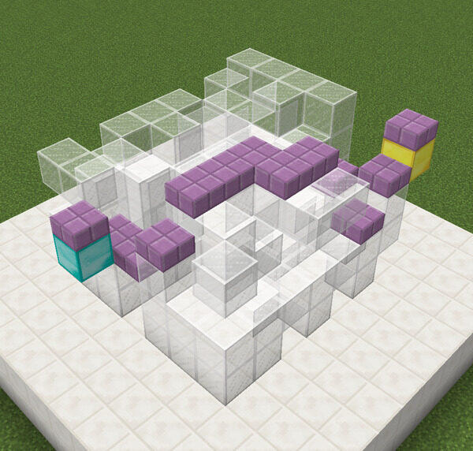
Connecting two doors in a 7×7×7 space through successive edits. The agent builds a staircase; purple marks the path.
A JAX implementation moves simulation and training onto the GPU. We study observation size, randomized map shapes, and fixed positions for key tiles. Local observations improve generalization on the tested unseen maps, while global observations can perform better on maps matching the training setup.
@INPROCEEDINGS{earle2024pcgrl+,
author={Earle, Sam and Jiang, Zehua and Togelius, Julian},
booktitle={2024 IEEE Conference on Games (CoG)},
title={Scaling, Control and Generalization in Reinforcement Learning Level Generators},
year={2024},
volume={},
number={},
pages={1-8},
keywords={Training;Measurement;Procedural generation;Limiting;Shape;Layout;Graphics processing units;procedural content generation;reinforcement learning},
doi={10.1109/CoG60054.2024.10645598}
}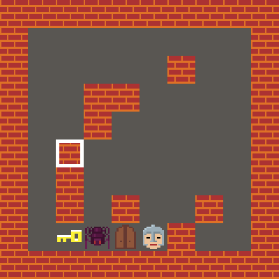
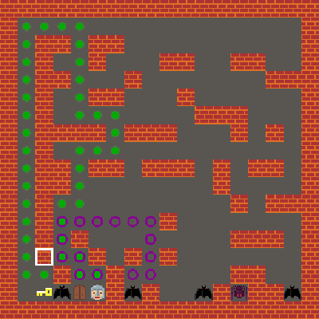
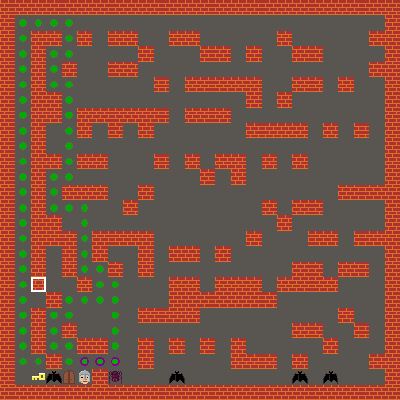
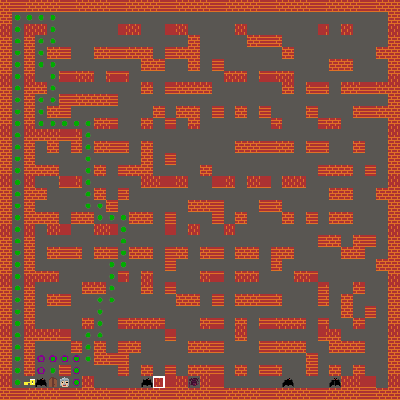
A policy trained on 16×16 maps with 3×3 local observations reuses its design pattern on smaller and larger maps.
Several agents with a shared policy and reward edit the same level. Their joint steps let multiple edits share an expensive reward computation. Some advantages shrink when total actions and reward computations are held constant, while benefits persist on tested maps with unfamiliar randomized shapes.
@article{earle2025multiagentpcgrl,
title={Video Game Level Design as a Multi-Agent Reinforcement Learning Problem},
volume={21},
url={https://ojs.aaai.org/index.php/AIIDE/article/view/36807},
DOI={10.1609/aiide.v21i1.36807},
abstractNote={Procedural Content Generation via Reinforcement Learning (PCGRL) offers a method for training controllable level designer agents without the need for human datasets, using metrics that serve as proxies for level quality as rewards. Existing PCGRL research focuses on single generator agents, but are bottlenecked by the need to frequently recalculate heuristics of level quality and the agent’s need to navigate around potentially large maps. By framing level generation as a multi-agent problem, we mitigate the efficiency bottleneck of single-agent PCGRL by reducing the number of reward calculations relative to the number of agent actions. We also find that multi-agent level generators are better able to generalize to out-of-distribution map shapes, which we argue is due to the generators’ learning more local, modular design policies. We conclude that treating content generation as a distributed, multi-agent task is beneficial for generating functional artifacts at scale.},
number={1},
journal={Proceedings of the AAAI Conference on Artificial Intelligence and Interactive Digital Entertainment},
author={Earle, Sam and Jiang, Zehua and Vinitsky, Eugene and Togelius, Julian},
year={2025},
month={Nov.},
pages={32-42}
}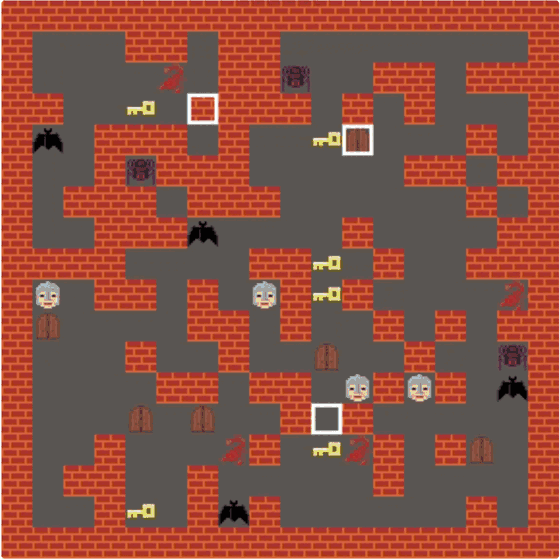
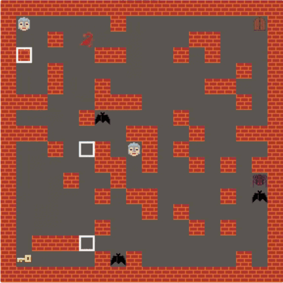
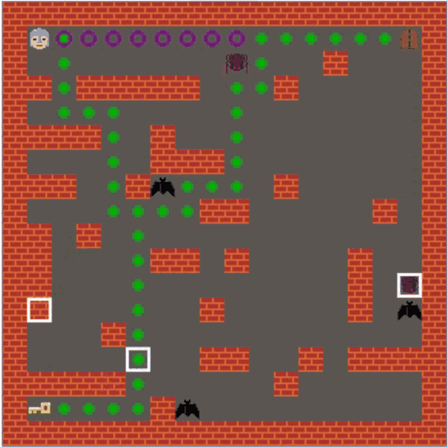
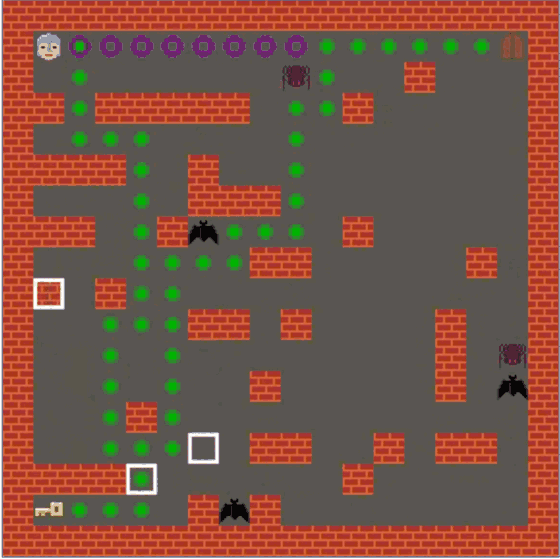
Multiple agents cooperatively edit a shared Dungeon level over one episode.
A language model builds and revises levels through tools, using symbolic observations and feedback after each action. Individual tile edits and higher-level generation algorithms share one interface, with evaluators deciding which revisions to keep. The framework supports computable targets and broader language requests across five game domains without task-specific fine-tuning.
@article{jiang2026agentic,
title = {Agentic PCG: Procedural Content Generation via Tool-using LLMs},
author = {Jiang, Zehua and Earle, Sam and Khalifa, Ahmed and Togelius, Julian},
journal = {Available at SSRN 6499021},
year = {2026},
note = {Available at SSRN: \url{https://ssrn.com/abstract=6499021}}
}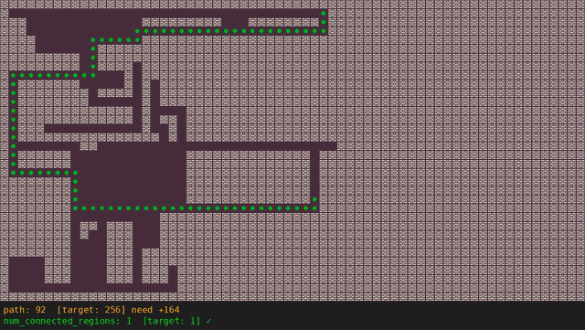
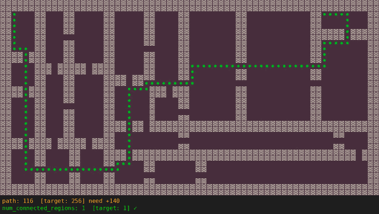
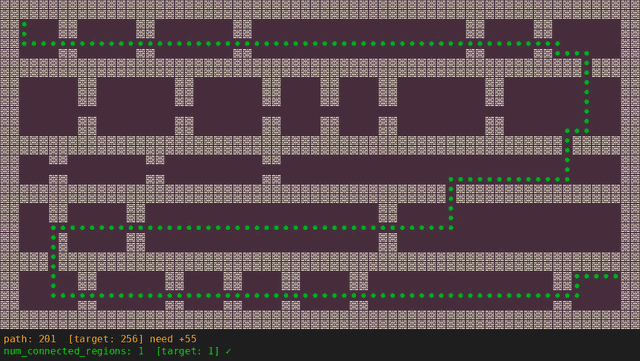
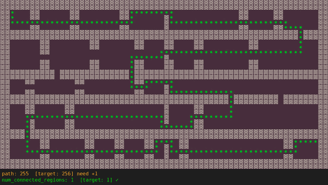
Gemini 2.5 Pro combines binary space partitioning generator calls with local edits to lengthen the path.
An execution harness helps local models recover from incomplete tool calls and preserve useful edits without changing their weights. Tested platformer builders also support requests about jumps, coins, and enemy defeats. The system remains limited by what its tools and evaluators can represent, and local generation is still too slow for use during gameplay.
@article{jiang2026enabling,
title = {Enabling Agentic PCG with Harness-Controlled Local Models},
author = {Jiang, Zehua and Earle, Sam and Khalifa, Ahmed and Togelius, Julian},
journal = {Available at SSRN 7502203},
year = {2026},
month = sep,
doi = {10.2139/ssrn.7502203},
url = {https://ssrn.com/abstract=7502203},
note = {Available at SSRN: \url{https://ssrn.com/abstract=7502203}}
}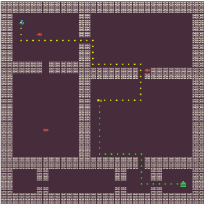
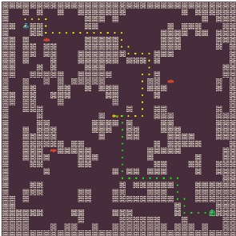
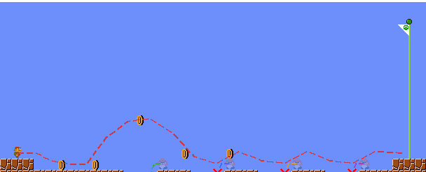
Full list on Google Scholar.
News